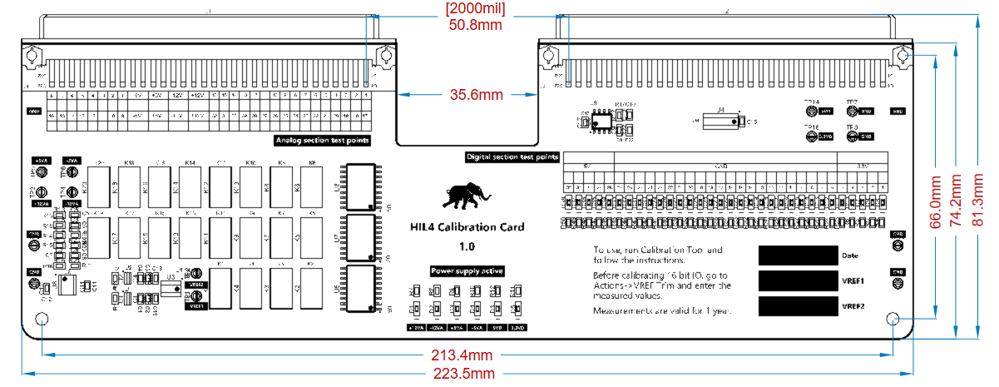
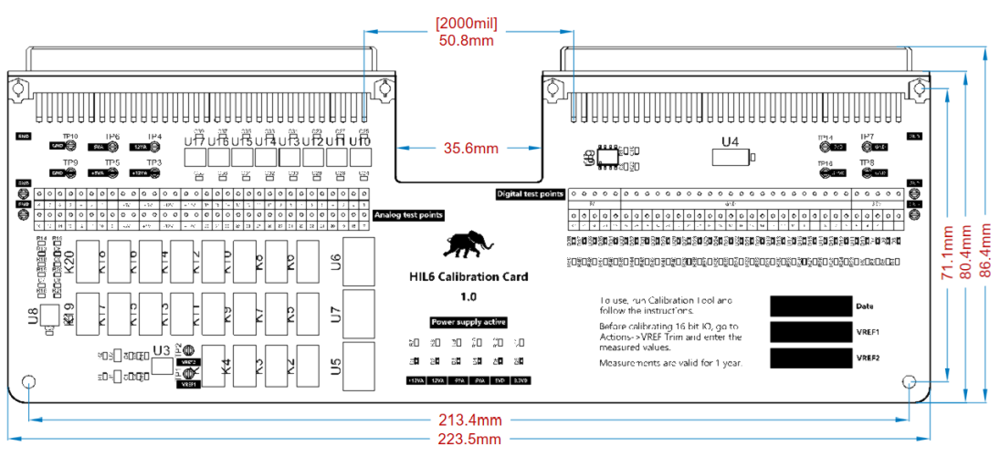

Mechanical
Dimensions and mechanical guidelines for the HIL4 and HIL6 Calibration Cards.
HIL4 Calibration Cards are designed to be directly plugged into a single row of DIN41612 connectors of a HIL101 or HIL4-series simulator device. HIL6 Calibration Cards are designed to be directly plugged into a single row of DIN41612 connectors of a HIL5- or HIL6-series simulator device.
Dimensions are given in Figure 1 and Figure 2.

